FATOU MBAYE
Étudiante en BUT2 Réseaux et TélécommunicationsUniversité Clermont Auvergne
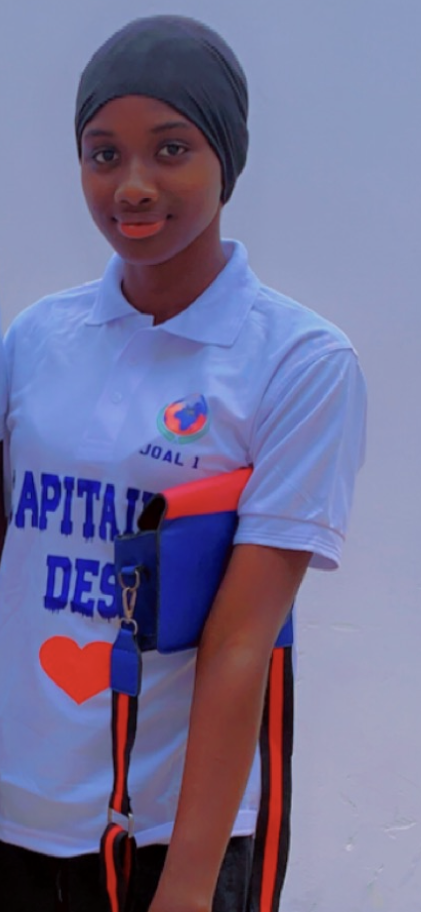
À propos de moi
Après l'obtention de mon baccalauréat en juillet 2022, j'ai intégré la première année de médecine à l'université Cheikh Anta Diop de Dakar.
Les cours à la faculté de médecine ont débuté en janvier 2023, et le calendrier a été bien respecté. J'ai terminé mon premier semestre en mai.
Cependant, le 1er juin 2023, en raison de tensions politiques à Dakar, l'université a été saccagée et fermée pour une durée indéterminée.
Étant toujours dans l'action, je me suis alors consacrée à divers projets, notamment l'association "READY TO HELP". Cette association à but non
lucratif avait pour mission d'aider les familles démunies et de porter secours aux enfants de la rue. En tant que responsable de la commission administrative,
j'étais chargée de tous les aspects virtuels et technologiques de l'association. Pour mener à bien cette tâche, j'ai exploré les
nouvelles technologies de l'information, faisant ainsi ma première incursion dans le domaine des services numériques, qui m'étaient jusque-là assez inconnus.
L'ensemble de ces actions s'articulait autour des divers réseaux du monde et se réalisait par des transmissions d'une entité à une autre. À mesure que j'avançais
dans mes recherches, effectuées principalement sur les réseaux sociaux, je découvrais le domaine des réseaux et des télécommunications, qui m'a de plus en plus captivée.
Confrontée à un désir croissant de découvrir ce domaine et avec une grande passion pour l'expérimentation, j'ai donc décidé de poursuivre dans ce domaine, faisant ainsi
du BUT Réseaux et Télécommunications mon choix professionnel. Par ailleurs, j'ai validé ma première année.
Dans le cadre de mon travail, Je suis une personne discrète, polyvalente, autodidacte, avec une maitrise de soi.
En effet, ces qualités me permettent toujours d'accomplir les tâches qui me sont assignées
dans la plus grande réussite et aussi de m'améliorer aussi bien sur le plan professionnel que personnel.
A l'issu de mon stage dans l'entrprise Abicom en tant que technicien support, je compte poursuivre mes études dans une école dingénieure.
En raison des journées portes ouvertes organisées par l'IUT, j'ai réalisé une capsule vidéo permettant de présenter
la formation et mon parcours dans son ensemble. Vous pouvez la suivre en cliquant sur le lien ci dessous.
Septembre 2024:
Validation de ma première année et inscription en BUT2 Réseaux et Télécommunications, cette deuxième année est axée sur la spécialisation en cybersécurité.
Avec l’essor des services numériques, la sécurisation des systèmes d’information est devenue cruciale. Ce parcours
permet d’acquérir des compétences en cryptographie, sécurité des réseaux, détection des intrusions, et gestion des incidents.
Grâce à des projets pratiques et une période de stages, j'apprend à appliquer mes connaissances dans des environnements réels,
me préparant à répondre aux défis de la cybersécurité et à protéger les infrastructures numériques face aux menaces croissantes.
Septembre 2023:
Inscription en premire année de BUT1 en Réseaux et Télécommunications à l'Université Clermont Auvergne au campus des cézeaux(63).
Dans cette formation sont traités différents domaines tels que les langages de programmation (Python, HTML, CSS, Bash, Java Script, php)
l'initation à l'architecture et à la configuration des réseaux informatiques ainsi que l'étude des transmissions
et des câblages électriques nécessaires à cet effet. Le domaine qui a beaucoup plus captivé mon attention dans cette
formation est l'architecture des réseaux informatiques car elle me permet en fait de comprendre réellement le fonctionnement
du réseau dans chacune de ses parties. Et cet aspect répond bien à mon goût de la pratique et de la maitrise.
Janvier 2023:
Inscription en première année de médecine à l'université Cheikh Anta Diop de Dakar au Sénégal. A l'issu de cette formation
je devais avoir un diplome de docteur d'Etat en médecine. L'Inscription à cette formation a surtout été causée par le fait
que ce domaine m'offrait l'opportunité de connaitre chaque composant de l'humain et le fonctionnement
de l'être dans sa complexité et sa particularité. Chose qui a toujours titillé ma curiosité intellectuelle. Cependant, à cause
de la fermeture de l'université, je me suis tournée vers d'autres domaines d'études particulièrement les réseaux d'où ma réorientation.
Juillet 2022:
Obtention du Baccalauréat général en série scientifique option Sciences expérimentales avec la mention bien
au Lycée Léopold Sédar Senghor dans la presqu'île de Joal Fadiouth au Sénégal.
Expériences professionnelles
Expérience: Été 2024 - Employée polyvalente au restaurant Flunch de La Pardieu(63) Travail accompli: Au sein de ce restaurant, j'ai occupé divers postes tels que la plonge, le service en salle,
le montage de buffets, la gestion des menus enfants et enfin un poste de caissière. Cette expérience, qui demandait à la fois endurance,
convivialité et parfois des efforts physiques, m'a beaucoup apporté, tant sur le plan technique qu'humain.
Expérience: Participation en tant que jury aux cordées de la réussite travail accompli: J'ai assisté les lycéens dans la préparation de leurs présentations orales afin de les aider à perfectionner leur expression et leur capacité de présentation.
L'objectif était d'améliorer à la fois leur élocution et leur manière de se présenter devant un public Résultats: Cette expérience m'a permis d'être plus pédagogue et d'améliorer ma capacité d'expression.
Expérience:Stage à la Clinique de la petite côte à Joal Fadiouth de Juin à Juillet 2023 Travail accompli: je me suis initiée aux soins infirmiers et d'aide soignants. J'ai effectué de multiples tâches
telles que la désinfection de plaies, la suture et j'ai pris connaissance à l'usage des médicaments et de leurs posologies. Résultats: : Mes progrès durant ce stage m'ont valu le titre d'infirmière titulaire auprès du médecin responsable du
district.
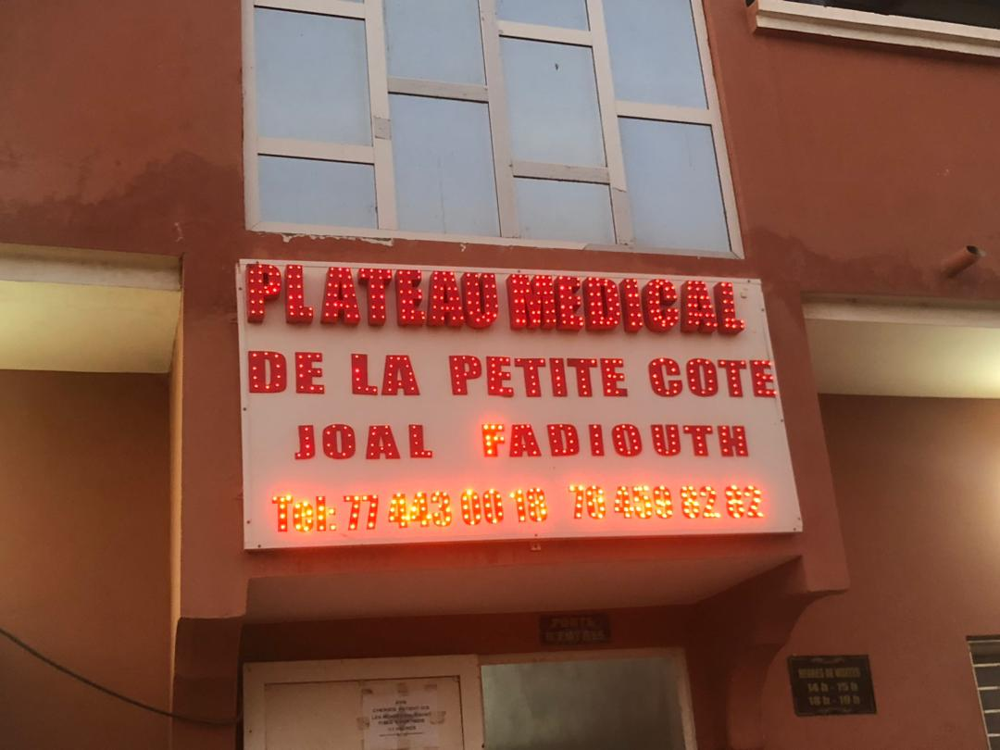
Expérience: participation à la grande couverture médicale organisée par Moustarchidine Assistance médicale
à Diokhor(Saint-Louis/Sénégal) du 16 au 18 août 2023. En effet, Diokhor est un petit village du nord du sénégal situé entre le Walo et la première capitale du Sénégal(Saint-Louis).
Le but de cette couverture médicale était d'apporter à cette population majoritairement agée un meilleur accès
à la couverture sanitaire, de leur faire passer des bilans de santé ou même de leur distribuer des médicaments gratuitement. Travail accompli: J'étais assignée à un poste d'infirmière aux côtés des médecins chefs de la couverture. Et alors
j'étais chargée d'assister ces derniers durant les consultations, de guider les patients et de mettre en pratique mes compétences
en pansement, suture et en posologie des médicaments. Résultats: cette expérience m'a surtout permis de consolider mes connaissances dans le domaine médical et m'a confrontée
à des situations plus complexes telles que les sujets post-opératoires et à devoir y apporter une solution efficace.
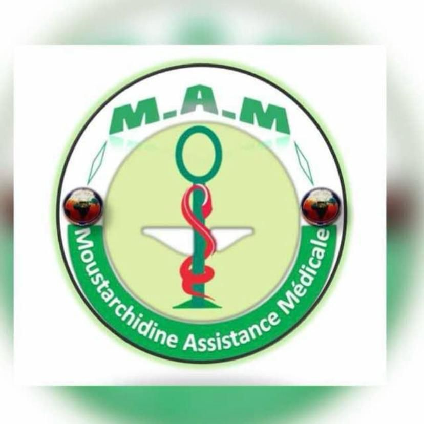
Compétences
Compétences Techniques
En tant que professionnel des technologies de l'information, je possède un ensemble diversifié de compétences techniques.
Mes connaissances couvrent plusieurs domaines, me permettant alors de contribuer de manière
significative à des projets variés. Voici un aperçu de mes compétences clés :
cybersécurité
Durant ma formation, j'ai appris les bases de la cybersécurité, notamment en respectant les normes de l'ANSSI
(Agence Nationale de la Sécurité des Systèmes d'Information). J'ai acquis les règles fondamentales telles que la gestion des mots de passe,
la mise à jour régulière des systèmes, et la sensibilisation aux menaces comme le phishing. En tant qu'apprenti, j'ai également eu l'opportunité
de pratiquer des tests d’intrusion sur notre propre système pour vérifier sa sécurité et détecter les vulnérabilités. Ces pratiques sont encadrées
par des lois strictes et permettent de renforcer la protection des données tout en respectant les normes en vigueur.
70%
Câblage Cuivre et Fibre Optique
Avec le BUT Réseaux et Télécommunications, j'ai exploré des domaines tels que le câblage
en cuivre et en fibre optique. En travaux pratiques, j'ai réussi à réaliser le câblage approprié entre un
oscilloscope, un générateur de fonctions, un multimètre et une
plaque d'essai. En effet, la difficulté de cette TP résidait dans la capacité à choisir le câble approprié pour chaque
composant en fonction de ses caractéristiques et de ses fonctions. Les câbles diffèrent par leur constitution et leurs utilisations.
Ainsi, pour accomplir cette tâche, j'ai utilisé des cordons banane-banane et des câbles RG58 avec une prise
BNC et une prise banane ou avec deux prises BNC. Grâce à cette mise en pratique du câblage en cuivre, je suis capable de concevoir,
installer et entretenir des réseaux de communication.
La fibre optique est de plus en plus utilisée dans les systèmes d'interconnexion en raison de sa résistance aux interférences
électromagnétiques et radiélectriques. J'ai acquis une expérience pratique dans l'analyse de la fibre en relevant ses différentes
caractéristiques telles que son atténuation, par exemple, afin de mieux modéliser le système. Grâce à ces différents travaux pratiques, j'ai
acquis une expertise dans la manipulation des différents câbles.
85%
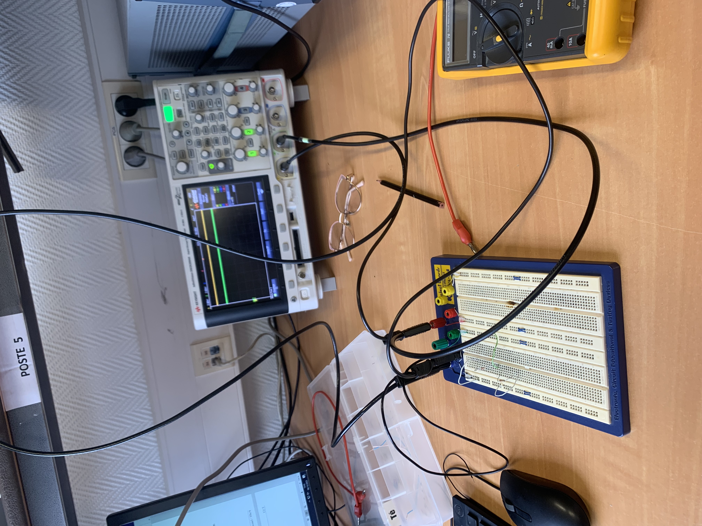
Représentation Temporelle et Fréquentielle d'un Signal: Étude de Filtre
Dans le cadre des divers travaux pratiques (TP) effectués lors des séances de télécommunications, j'ai tout d'abord pris le temps de me familiariser
avec l'oscilloscope, le générateur de fonctions et l'analyseur de spectre. Ce processus m'a permis
ensuite de m'engager dans des manipulations visant à ajuster un signal selon des paramètres spécifiques tels que la fréquence et l'
amplitude. Lors d'un TP particulier, j'ai réglé un signal sinusoïdal à l'aide du générateur de fonctions, puis j'ai affiché ce signal
sur l'oscilloscope en ajustant les échelles pour obtenir un affichage optimal. Le domaine temporel ne permettant pas toujours une étude approfondie,
j'ai utilisé la représentation spectrale grâce à l'analyseur de spectre. Cette nouvelle mise en pratique permet de définir un signal suivant différentes
plages de fréquences et de pouvoir caractériser ce dernier en fonction de la largeur de sa bande. De plus, elle permet également de caractériser un filtre
et de connaître ses diverses caractéristiques avant son utilisation. Cette compétence s'avère cruciale pour optimiser les performances des systèmes de transmission,
en permettant une compréhension approfondie de leurs caractéristiques et de leur comportement dans différents environnements.
85%
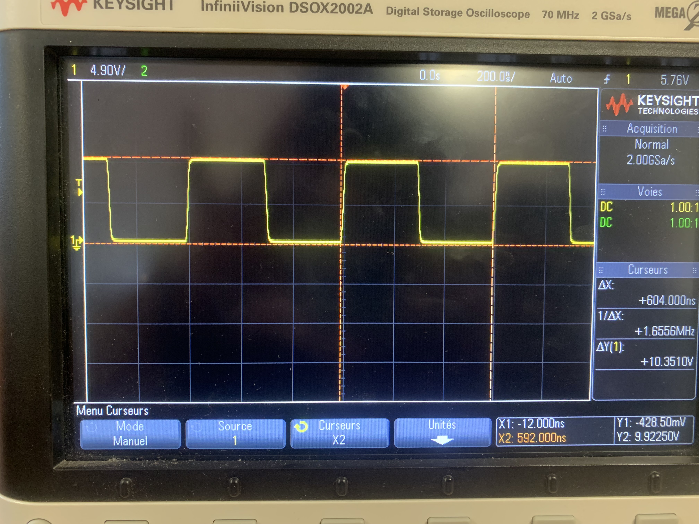
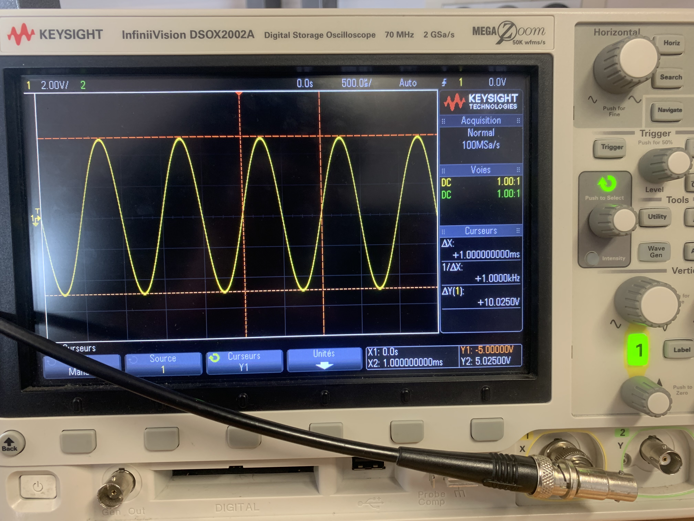
programmation Web avec HTML et CSS
Durant cette formation j’ai rencontré divers langages de programmation. Ces langages permettent soit de concevoir et développer
des applications ou logiciels destinés à un usage informatique comme Python, soit d’interagir avec l’ordinateur à partir
d’une interface en ligne de commande pour naviguer dans des répertoires ou exécuter des programmes comme le Bash ou encore
pour créer des pages web en y apportant du contenu et du style tels que HTML et CSS. Dans le cadre d'un projet, j'ai créé une page web représentant mon portfolio. Cette page contenait mon parcours scolaire,
mes expériences et mes réalisations. Le but de ce portfolio était de le présenter à des entreprises pour ma recherche d’alternance à partir de septembre 2024.
J'ai alors utilisé les balises HTML pour apporter un contenu à ma page, et le CSS pour donner à mon site un aspect attractif et surtout
J'ai particulièrement mis l'accent sur la lisibilité et la cohérence visuelle. Bien que ce projet soit toujours en cours, il m’a permis de consolider mes compétences dans les langages HTML et CCS et également
d’accentuer mes recherches dans le but de perfectionner mes productions futures.
70%
Programmation Python
Avec le langage de programmation Python, j'ai réussi à automatiser des tâches et à améliorer la gestion du planning.
En utilisant ce langage interprété, j'ai pu créer de l'ASCII ART, qui consiste à produire une représentation
artistique à partir d'un ensemble d'instructions Python. De plus, j'ai pu présenter les lettres de l'alphabet dans un tableau,
ainsi que créer un gâteau d'anniversaire dont le nombre de bougies varie en fonction de l'âge fourni par l'utilisateur.
La définition de nouveaux types d'objets s'est révélée très utile. J'ai exploré la programmation orientée objet en créant une classe nommée
"FibreOptique", dans laquelle j'ai pu définir plusieurs méthodes et comparer les fibres en fonction de leurs bandes passantes. Ce dernier
aspect de la programmation est particulièrement important car il nous permet de manipuler les objets de manière plus efficace.
60%
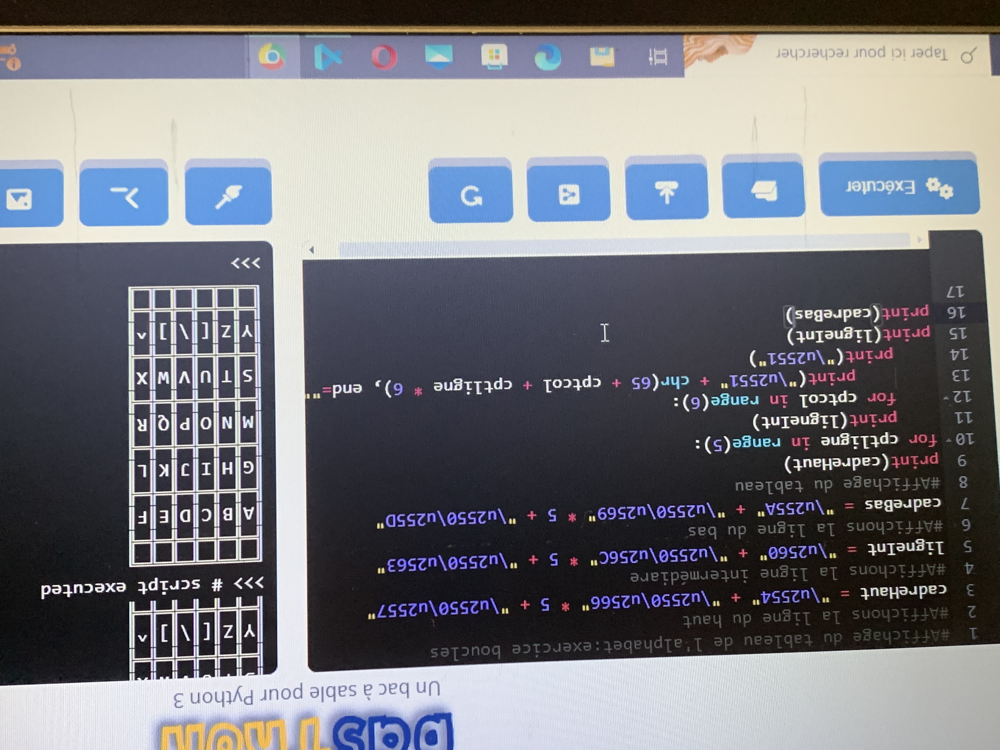
Programmation PHP/MySQL et JavaScript
Face à une grande quantité de données à traiter, le monde numérique s'éloigne de plus en plus des systèmes de gestion de fichiers
pour adopter les bases de données. Ces dernières permettent un traitement et une sauvegarde plus simples et robustes des données.
Grâce à la combinaison des langages PHP et MySQL, j'ai pu interroger des bases de données relationnelles en utilisant
un développement côté serveur. D'autre part, JavaScript a été utilisé avec Node.js pour mettre en place une application
de gestion de tickets. Avec ce dernier langage, j'ai pu mettre à jour de manière dynamique cette application qui offrait des vues différentes selon les utilisateurs.
Ces langages d'interrogation de bases de données sont essentiels pour la manipulation et le traitement des données.
60%
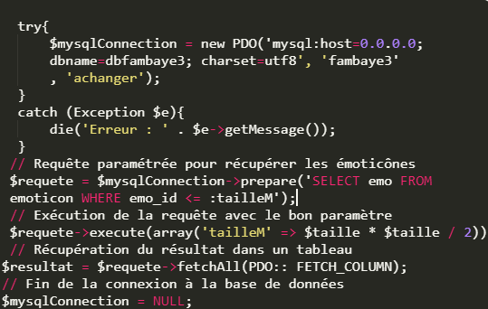
Configuration Réseau
Plan d'adressage réseau avec IPv4/IPv6
IPv4 et IPv6 sont des protocoles standardisés pour l'identification des machines sur internet. Ils attribuent à chaque équipement du LAN (Local Area Network)
un identifiant unique. Bien que le protocole IPv4 ait été longtemps standard dans la configuration des équipements, l'épuisement des adresses IP a conduit à une adoption croissante d'IPv6.
Lors de travaux dirigés, j'ai utilisé Cisco Packet Tracer pour configurer des identifiants uniques pour chaque périphérique d'un réseau local, comme le routeur, le serveur
et les hôtes. J'ai attribué à chaque périphérique une adresse IP pour permettre l'envoi et la réception de données dans le réseau, ainsi qu'un masque de sous-réseau
pour que les équipements puissent se reconnaître mutuellement. De plus, j'ai spécifié une adresse de passerelle, qui est l'adresse IP du routeur utilisée par les équipements
pour atteindre un réseau distant ou internet. Cette expérience pratique m'a permis de maîtriser la fourniture d'un adressage réseau pour tout équipement au sein d'un réseau.
80%
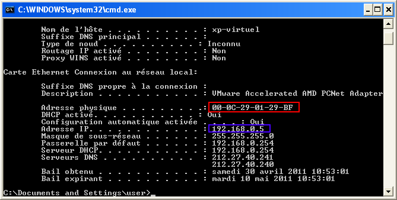
Configuration de Routeur et de Commutateur
Le routeur et le commutateur Ethernet sont deux équipements essentiels dans un réseau local. En effet, ils permettent respectivement d'acheminer les paquets envoyés à travers le réseau vers la
bonne destination et de commutateur de paquets pour permettre le partage de données entre deux machines adjacentes. La configuration de ces équipements se fait via une liaison série à l'aide d'
un câble console. Cette manipulation implique la mise en place de mots de passe pour sécuriser les configurations et les droits d'accès aux équipements, la création de réseaux virtuels
pour cloisonner le réseau, l'attribution d'adresses IP aux interfaces, l'utilisation d'un système de cryptage pour empêcher l'affichage en clair des mots de passe, et enfin la sauvegarde
de ces configurations dans la mémoire non volatile. La prise en main de ces équipements facilite la gestion et la supervision du réseau.
80%
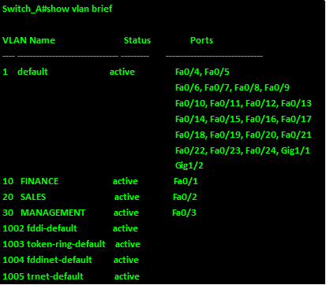
Architecture Réseau: Modèles OSI et TCP/IP
Durant cette formation, j'ai acquis des compétences dans l'architecture des modèles OSI et TCP/IP. OSI est un cadre conceptuel utilisé pour décrire les fonctions d'un système de mise en réseau. Ce modèle définit
une architecture hiérarchique qui répartit logiquement les fonctions nécessaires à la communication entre systèmes, composée de 7 couches.
Chaque couche intervient lors de la transmission de paquets dans le réseau, fonctionnant grâce à l'usage de divers protocoles. Ce modèle permet l'envoi de données tout en assurant leur arrivée sans corruption ni
détérioration. Quant au modèle TCP/IP, il s'agit d'une implémentation du modèle OSI par contraction des couches supérieures à la couche transport.
L'étude de ces modèles s'est principalement concentrée sur l'adressage avec les adresses IP et les numéros de port, ainsi que sur le routage de paquets avec l'usage des routes statiques ou dynamiques via des protocoles
comme RIP et EIGRP. Les protocoles TCP et UDP ont été explorés pour comprendre leur mode de fonctionnement ainsi que leurs limites et avantages respectifs, afin de spécifier leur
utilisation en fonction des besoins.
80%
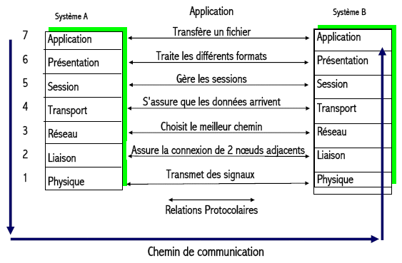
Administration Système
Ma formation en BUT m'a plongé dans le quotidien d'un administrateur réseau, impliquant la configuration, la supervision du réseau et
la gestion des mises à jour des systèmes. J'ai acquis une expérience pratique dans les mécanismes de virtualisation et
de conteneurisation, ainsi que dans la sauvegarde et la sécurité des données.
Pour cela, j'ai travaillé avec des logiciels tels que rsync et crontab pour assurer des systèmes de
sauvegarde et de synchronisation automatisés. Les hyperviseurs tels que VMWare et VirtualBox m'ont permis de créer des
machines virtuelles capables de se connecter vers l'extérieur en mode bridge ou NAT, ou de fonctionner au
sein d'un réseau privé et d'échanger des données entre elles. Une exploration approfondie des mécanismes de gestion des groupes m'a également
permis de définir les droits d'accès des utilisateurs à des dossiers ou des fichiers en fonction de leurs permissions. Grâce à Active Directory,
j'ai été en mesure de déployer un serveur de domaine capable d'authentifier chaque utilisateur, optimisant ainsi le processus en évitant d'avoir à inscrire chaque
utilisateur sur chaque poste de travail individuellement.
65%
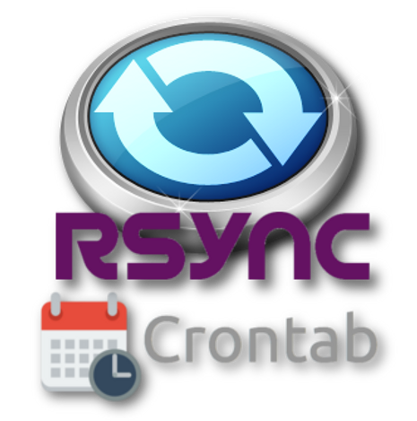
Téléphonie
Durant cette première année, j'ai également exploré le domaine de la téléphonie. À travers une série de travaux pratiques,
j'ai été amenée à réaliser la configuration des téléphones et du commutateur téléphonique (anciennement PABX). Il fallait
aussi comprendre le fonctionnement du Réseau Téléphonique Commuté (RTC) ainsi que la mise en place de liaisons trunk dans
le but d'optimiser les installations. À l'ère de l'internet, la quasi-totalité des communications sont transmises par voie IP,
y compris pour les communications téléphoniques. Il fallait également apprendre à modéliser le système de transmission téléphonique
afin d'optimiser les ressources et, en revanche, réduire les pertes.
80%
Compétences linguistiques
Français : Niveau C2
Anglais : Niveau B2
Wolof : Langue maternelle
Qualités
Discrétion:
La discrétion est une qualité comportementale indispensable aussi bien dans le milieu social que professionnel.En effet,
ma discrétion se manifeste par ma capacité à gérer les informations confidentielles avec la plus grande précaution.
Je suis consciente de l'importance de respecter la vie privée des collègues, des clients et de l'entreprise dans son ensemble.
Mon approche consiste à traiter les données sensibles de manière confidentielle, en veillant à ce qu'elles ne soient partagées
qu'avec les personnes concernées et autorisées. Par ailleurs, ma discrétion s'étend au-delà de la sphère professionnelle. Je suis
consciente que nos vies peuvent parfois influencer notre travail. C'est dans ce sens je m'efforce de maintenir une frontière claire entre
entre ma vie privée et ma vie professionnelle.
Polyvalence:
Ma capacité à m'adapter rapidement aux changements et à apprendre de nouvelles compétences me permet d'apporter une une approche flexible et dynamique à
mes projets. En adoptant une approche polyvalente, je parviens toujours à m'améliorer sur des domaines qui m'étaient complètement inconnus.
L'exemple le plus récent est avec les langages de programmation. Bien que ce soit ma première expérience avec le codage, je suis
quand même parvenue à m'assurer un tel niveau qu'ils me permettent d'automatiser mes différentes tâches.
Autodidacte:
J'ai acquis la majeure partie de mes compétences par par initiative personnelle et ma passion pour l'apprentissage. Mon parcours démontre ma capacité à assimiler
de nouvelles connaissances de manière autonome, démontrant ainsi ma détermination à les développer en permanence. Grâce à cette qualité, j'ai gagné une grande résilience
et une volonté constante d'atteindre l'excellence. Je ne me prive jamais de nouvelles réflexions dans n'importe quel domaine
important de la vie et d'essayer d'y avoir une certaine maîtrise et compréhension.
Maitrise de soi
Malgré les circonstances de la vie qui peuvent être contraignantes et très difficiles,je suis toujours arrivée
à me contrôler et à être lucide.Ainsi, je me sens capable à rencontrer différentes types de clients chacun ayant sa propre personnalité.
et à pouvoir les satisfaire dans une harmonie totale et avec une lucidité d'esprit.
Projets
Projet: Projet intégratif de fin d'année universitaire 2023-2024
Contexte: Ce projet fut réalisé dans un contexte universitaire et en groupe.
Objectif: L'objectif de ce projet était de mettre en pratique toutes les compétences acquises durant les deux premiers
semestres afin de concevoir et gérer un réseau d'entreprise opérationnel, sécurisé et adapté aux nouvelles technologies.
Mission:
La réalisation de ce projet a suivi un processus structuré en trois étapes clés, assurant ainsi une mise en œuvre efficace
et une présentation professionnelle. Voici une vue d'ensemble concise du cheminement suivi : Étape 1: Conception et Planification du Projet
Cette première partie a été d'une importance capitale pour la réussite de ce projet. En effet,
elle a d'abord consisté à prendre connaissance des besoins de l'entreprise cliente, tant au niveau des matériels que des logiciels,
puis à établir un processus à suivre pour répartir les tâches entre les différents membres du groupe et gérer l'évolution du projet
en fonction du temps. Elle a également consisté à mettre en place un diagramme de Gantt pour présenter un travail sérieux dans les délais prédéfinis.
Étape 2: Mise en place de l'infrastructure et réalisation des premiers tests de connectivité
Après la première étape, il était temps de mettre en place l'infrastructure physique. Pour ce faire, nous disposions de câbles Ethernet
pour réaliser les différentes connexions entre les équipements, ainsi qu'un commutateur Ethernet (type Cisco) sur lequel il fallait paramétrer
divers réglages, notamment la création de VLANs afin de cloisonner le réseau en sous-réseaux correspondant aux différents secteurs de l'entreprise
(RH, Technique, Direction). Un routeur était également utilisé pour permettre aux équipements internes de l'entreprise d'accéder à Internet.
Un serveur DHCP fut configuré pour la distribution des adresses IP, un serveur web fut hébergé, et des services comme SSH, la messagerie électronique,
entre autres, furent installés pour assurer le bon fonctionnement de l'entreprise.
Étape 3:Mise en Œuvre, Révision, Amélioration et Finalisation:
Lors de cette phase, nous avons procédé à la mise en œuvre concrète du projet en suivant le plan établi.
Chaque composant du réseau a été configuré, testé et ajusté pour répondre aux besoins spécifiques de l'entreprise.
Après l'installation initiale, nous avons réalisé une révision complète pour identifier et corriger les éventuelles anomalies,
optimisant ainsi les performances et la sécurité du réseau. Les améliorations apportées incluaient l'ajustement des paramètres réseau,
l'amélioration des configurations de sécurité et l'optimisation des services installés.
En phase de finalisation, nous avons mis en place un serveur web qui synthétisait l'ensemble des actions réalisées tout au long du projet. Ce serveur web,
traduit également en anglais, permettait de présenter de manière claire et professionnelle toutes les étapes et réalisations du projet, illustrant notre
approche méthodique et notre capacité à répondre aux standards internationaux.
Résultats:
Ce projet m'a permis de mieux intégrer les notions abordées dans les différents cours et de renforcer les compétences acquises au cours de ma première année.
En mettant en pratique ces connaissances, j'ai eu l'occasion d'approfondir ma compréhension des concepts théoriques et de développer des compétences concrètes
en gestion de réseau. De plus, cette expérience m'a offert une vue d'ensemble précieuse sur le travail d'un administrateur réseau, en me familiarisant avec les
défis et les responsabilités associés à ce rôle crucial.
Projet: Création de ma page web représentant mon portfolio.
Contexte: Ce projet fut réalisé dans un contexte universitaire et individuellement.
Objectif: L'objectif de ce projet est d'apprendre à coder en HTML et en CSS afin de l'utiliser lors de
la création de cette page web qui me représentera sur Internet.
Mission:
La création de ma page web pour le portfolio a suivi un processus structuré en trois étapes clés, assurant ainsi une mise en œuvre efficace
et une présentation professionnelle. Voici une vue d'ensemble concise du cheminement suivi : Étape 1: Conception et Planification du Projet
Avant de commencer le développement, une planification minutieuse a été essentielle. Cette phase a impliqué la définition claire des objectifs du portfolio,
l'identification de mes compétences clés à mettre en avant et l'analyse des tendances actuelles en matière de design web. Un cahier des charges
détaillé a été établi, spécifiant les fonctionnalités nécessaires et les éléments visuels souhaités. Cette étape s'est alors surtout reposée sur un ensemble
de recherches et d'analyses sur les différentes tâches à effectuer, sur les ressources dont je dispose pour les réaliser
mais surout les délais nécessaires pour la réalisation de chacune de ces tâches. Étape 2: Conception du Design
Une fois la planification solidifiée, je suis passée à la conception du design de la page web. Cette étape a mis l'accent sur la création d'une interface
utilisateur à la fois intuitive et esthétiquement plaisante. J'ai utilisé des langages comme HTML5 intégrer les informations nécessaires à la page et du CSS
pour apporter un style personnel à la page. L'objectif était de mettre en avant de manière claire et attrayante mes compétences. L'importance a été accordée
à la cohérence visuelle à la lisibilité du contenu et à l'adaptabilité à divers dispositifs. Étape 3:Mise en Œuvre, Révision, Amélioration et Finalisation:
La phase de mise en œuvre a été déterminante pour donner vie à la vision initiale de mon portfolio. Après avoir codé le design élaboré, j'ai entrepris une révision minutieuse
de tous les éléments de la page. Durant cette étape, j'ai porté une attention particulière à la cohérence du contenu, à la fluidité de la navigation et à la performance globale.
Des tests d'usabilité ont été réalisés pour garantir une exploration aisée de mes compétences et projets par les visiteurs. Par la suite, j'ai entrepris une démarche d'amélioration
continue, en tenant compte des retours obtenus lors des premiers tests. Les ajustements ont porté aussi bien sur le design que la fonctionnalité,
avec une priorité accordée à l'optimisation de l'expérience utilisateur.
Résultats:
Ce processus, de la planification à la mise en ligne, a été crucial pour créer un portfolio professionnel qui reflète de manière adéquate mes compétences et mes réalisations.
Chaque étape a été abordée avec rigueur et précision, aboutissant en une page web fonctionnelle, esthétique et adaptée à mes besoins spécifiques.
Divers
En dehors des heures de cours je me retrouve dans de nombreux autres activités qui sont à la fois didactiques,
ludiques et épanouissantes parmi lesquelles: La lecture:
La lecture est en fait une partie intégrante de ma vie. C'est un monde où je me sens l'unique acteur et maître de mon destin.
C'est principalement à travers la lecture que j'apprends à m'améliorer aussi bien sur le plan
intelectuel que personnel.
"Une Si Longue Lettre: Mariama Bâ"
Dans cette ouvrage, l'auteur aborde d'importants conflits de la culture africaine particulièrement Sénégalaise dont le plus notable étant la polygamie.
En effet, ce livre me présente de manière détaillée la culturelle et la mentalité Africaines, assurant ainsi mon enracinement culturel.
"Maimouna: Abdoulaye Sadji"
Ce livre traite toujours la société sénégalaise mais avec un nouveau angle de vision qui englobe la richesse, la noblesse, le mariage.
En effet, en Afrique, particulièrement au Sénégal, ces aspects sont des éléments fondamentaux de la culture. En accord avec mon désir de connaitre ma culture, je suis ouverte
à l'ensemble des ouvrages qui me donnent une meilleure compréhension de ma culture et de mes racines en vue d'assurer une meilleure ouverture
au monde. Comme le disait si bien le poète Sénégalais Léopold Sédar Senghor:"Enracinement avant ouverture".
"Vol de nuit : Antoine de Saint Exupéry"
Cette œuvre est l'une de mes préférées. En effet, elle montre un monde du travail dans toute sa complexité, avec ses risques et ses joies.
Dans cette œuvre, Antoine de Saint Exupéry, nous expose à de nombreuses valeurs et qualités telles
le courage, la détermination, la responsabité dans le cadre professionel.mpte bien intégrer ces valeurs
pour garantir une exécution responsable et rigoureuse de tout travail qui me sera confié.
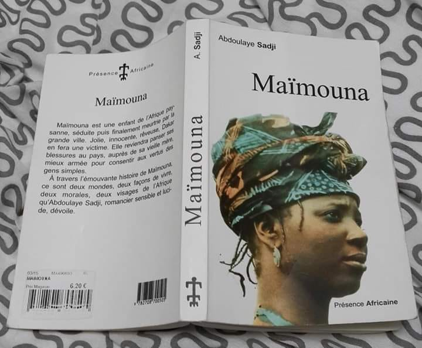
La cuisine :
La cuisine fait partie des meilleurs moments de ma journée. En effet, d'origine sénégalaise et Sachant
que le Sénégal est notamment réputé pour son fameux 'Thiébou Dieune', à base de riz et de poisson.
Ce plat est Patrimoine mondiale de l'UNESCO est connu pour son assaisonnement et ingrédients qui lui confèrent une saveur
spéciale et particulière. On retrouve également le célèbre C'est bon , plat dont le simple nom suscite l'envie de le déguster.
Ce plat est aussi à base de riz et de poisson braisé et accompagné de divers fruits de mer comme les crevettes. Je suis une passionnée de cuisine, et j'adore explorer
de nouvelles recettes, découvrir de nouveaux arts culinairest et partir à la rencontre de nouvelles cultures.